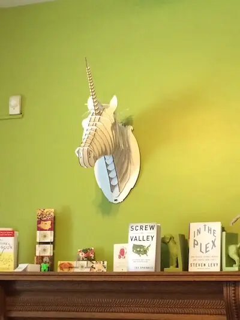

Life in Colorado
Info
| Summary | An update from my experiences in Colorado. |
|---|---|
| Shared | 2015-03-03 |
| Revised | 2023-02-04 @ 18:00 UTC |
One month ago, with an entire world to travel at my fingertips, I chose to temporarily move to Denver, Colorado. For years I have heard great things about the people, hiking, skiing and beer, so I decided to give them a try.
The People
The following statement may cause me a bit of flack in the South, but
"Denver has the most welcoming population I’ve ever come across in my travels."
Never in my life have I met such a warm, trusting, "do good" people who have a blind affinity for strangers of all shapes, colors and creeds. Since my first day here, I have questioned whether I simply haven’t met enough people or experienced enough of the city to see its faults. But my initial premise is supported day after day and experience after experience.
One can tell much about the culture of a city by a few things:
- the attitude of its drivers towards foot traffic
- the treatment of and by service industry workers
- its beer
Foot Traffic
Drivers consistently stop for pedestrians to cross the street. Who would have thought this a novel concept? Additionally, if a driver pulls their car in to a cross-walk, 9 times out of 10 that person will wave, apologize and attempt to back their car up so folks on foot have space to walk. This alone speaks reams about a community.
Service Industry Workers
I am a harsh judge of patrons’ character when it comes to their interactions with service industry workers. Is it right to judge people? No. Does doing so help me guage not only the person I’m speaking with, but a community as a whole? Yes, for watching an unnecessarily rude man be put in his place by other restaurant-goers is something special.
On the other side of the coin, I have yet to meet a rude person providing me food & bev service. A great example is at Renegade Brewing. The bar tenders here struck up conversation while I was having a beer and burger, alone, on Valentine’s Day. After a few minutes of conversation, I was introduced to some of their friends across the bar, and we had great conversation and beer before parting ways.
The Beer
There are >200 breweries in Denver. ’Nuff said. These people like to have a good time.
Remote Working
My employer, Articulate, has paid for me to work three days per week out of the Density CoWorking spot. Density is located in a fun neighborhood about one block from the Marczyk Food Market. You know a place is cool when they have wall-mounted unicorn decor:

There are heaps of unique and delicious coffee shops to work from, as well. My favorite, thus far, is the Denver Bike Cafe on 17th Street.
Skiing
While skiing in Denver could be fun after a heavy snow, the mountains are nearby and ripe for adventure. I’ll let the pictures speak for themselves.
Wrap up
I have only begun to scratch the surface with all that Denver has to offer and look forward to another month here.